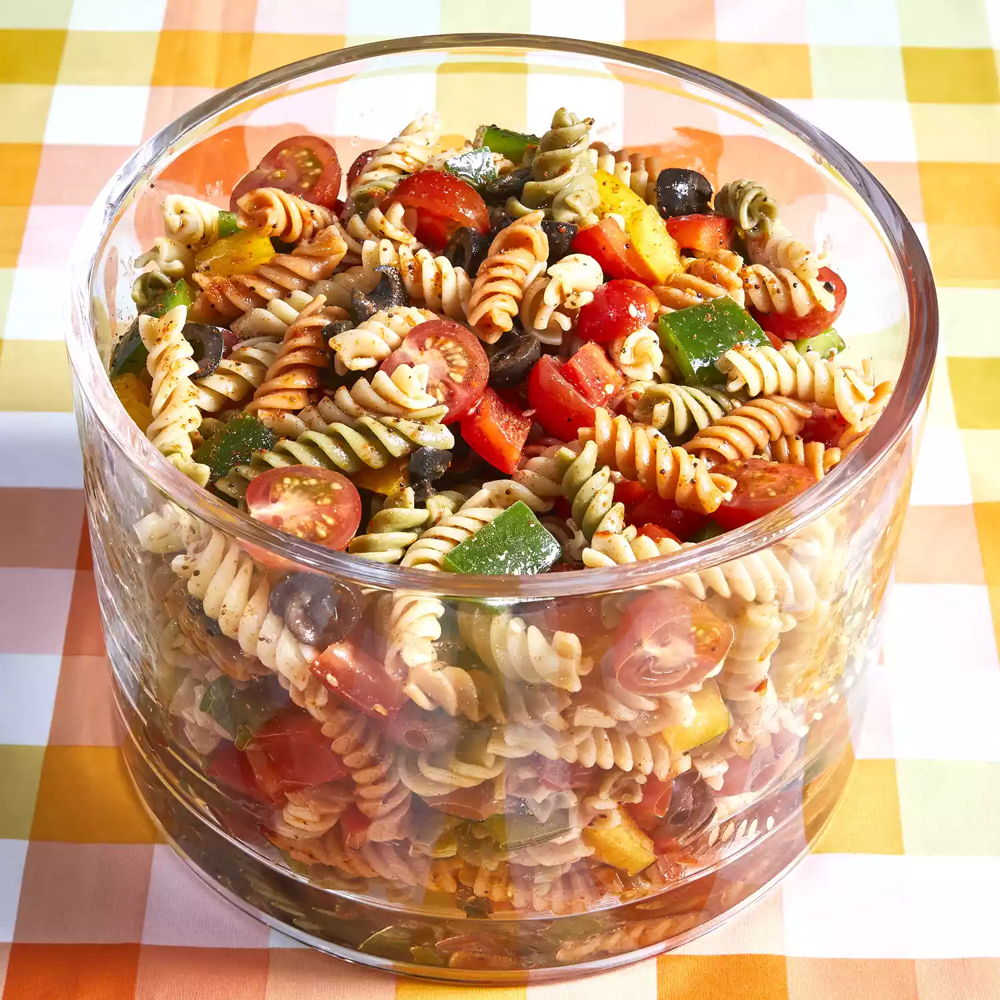

Pasta Salad
Home

Description
This pasta salad recipe is easy to make and relatively healthy. It also is vegetarian and can be customized for different flavors.
Ingredients
- 1 pound tri color spiral pasta
- 1 (16 ounce) bottle Italian style salad dressing
- 6 tablespoons salad seasoning mix
- 2 cups cherry tomatoes, diced
- 1 green bell pepper, chopped
- 1 red bell pepper, diced
- 1/2 yellow bell pepper, chopped
- 1 (2.25 ounce can black olives, chopped
Steps
- Bring a large pot of lightly salted water to a boil. Cook pasta in the boiling water, stirring occasionally, until tender yet firm to the bite, about 10 to 12 minutes; rinse under cold water and drain.
- Whisk Italian dressing and salad spice mix together until smooth.
- Combine pasta, tomatoes, bell peppers, and olives in a salad bowl; pour dressing over salad and toss to coat. Refrigerate salad, 8 hours to overnight.